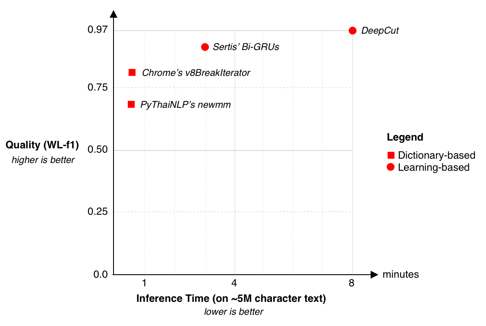

Word Tokenization for Thai¶
Research in word tokenization for Thai started around 1990. Over these 20 years, there have been sevaral algorithms being prosed to address the problem. These algorithms can be clustered into two categories, namely
- Learning-based:Unlike dictionary-based, algorithms in this group learn to split words based on labelled data. The learning problem is typically formulated as binary classification on sequence of characters.
Generally, these categories have different advantages and disadvantages. Dictionary-based algorithms are typically fast but with less capable when encountering unknown words. On the other hand, learning-based approaches are usually qualitatively better and more adaptable to data from different domains; however, their computation is relatively slower. Figure below summarizes current solutions into two axes: Quality (Word-Level f1) and Inference time.
Quality and Inference Time of Existing Thai Word Tokenizers. Please see Benchmarking for details of evaluation metrics. Device Specification *¶
From the plot, we can see that the DeepCut is state-of-the-art. However, it is significantly slower than other algorithms. While PyThaiNLP’s newmm is the the fastest one, lowest inference speed, it has the lowest tokenization quality.
Because tokenization is usually the first stage in NLP pipelines, the efficiency and accuracy of the tokenizer are crucial towards building a successful NLP application. Now, a question arises whether we can build fast and yet accurate tokenizer for Thai.
Analysis of Deepcut¶
DeepCut is a CNN with 13 different widths of convolution on character features or embeddings. Pooling is then used to combined features from these convotional layers, yeiding output to a fully-connected layer for final prediction.

{kind=link}
In total, DeepCut has around 500,000 trainable variables. Looking at DeepCut’s architecture, convotion layers are significatnly overlapped to each other; hence, these layers are redudant. With this observation, we have a hyphothesis that DeepCut could be smaller while achieving a similar level of tokenization quality.
Finding which layers in DeepCut could be removed.¶
We design an experiment to verify this proposition. The experiment can be described as follows:
Disable neurons in a layer by zeroing their activitions
Observe the change of tokenization quality
Repeat 1-2. to other layers
{kind=link}
In short, we found that if we remove the convolution layers of kernel width 7, 9, and 10, DeepCut will be 20% faster while its quality drops only 6%. Complete analysis can be found from our notebook 7. This result confirms our hyphothesis that we can have a smaller CNN model that is compentent in speed and quality.
How does AttaCut look like?¶
Recent trends in NLP have started to shift towards the use of attention and convolutional models (i.e. Transformer 8). One of the reasons is due to the fact that the computation of CNNs can be parallelized, while this is blocked in RNNs because of recurrence dependencies in those models. Hence, the inference process of CNNs is usually faster than RNNs.
AttaCut’s three convolutions with different filter widths and dilation rates.¶
Together with our DeepCut analysis, we firstly constuct AttaCut using CNNs. AttaCut’s convolutional layers are chosen in such a way that overlapping between filters is minimal while covering a similar context as in DeepCut. We satisfy this requirement using the dilated convolutions. Figure below are AttaCut’s convolutions:
AttaCut’s Architecture: 3 Convolutions -> Pooling -> Fully-connected Layer¶
Secondly, lingustically, word boundary is always syllable boundary; hence, we incorporate syllable knowledge into AttaCut. The collaboration is done in a form of syllable embedding in which characters in the same syllable have the same syllable embedding. This augmentation contextualizes each character to have different embeddings depending on its neighbours.
{kind=link}
Syllable and Word Boundaries¶
For syllable tokenization, we use P. Prasertsom et al’s Syllable SeGmenter (SSG) 9. SSG uses Conditional Random Fields (CRFs) on character features. The released model is trained on Thai National Corpus 10.
References
- 1
International Components for Unicode (ICU) BreakIterator
- 2
- 3
- 4
- 5
- 6
- 7
- 8
- *
For this experiment, we measured the inference time on MacBook Pro (Retina, 15”, Mid 2015), Intel Core i7 @ 2.2 Hz, Memory 16 GB with macOS 10.13.6.
- 9
P. Prasertsom. Syllable Segmenter for Thai using Conditional Random Fields, 2019.
- 10
Aroonmanakun, K. Tansiri, and P. Nittayanuparp. Thai National Corpus. pages 153–158, 2009.